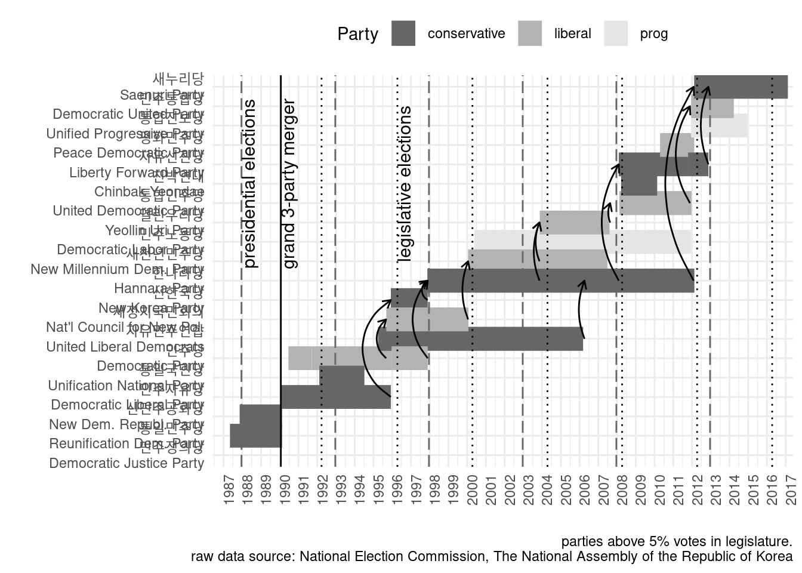
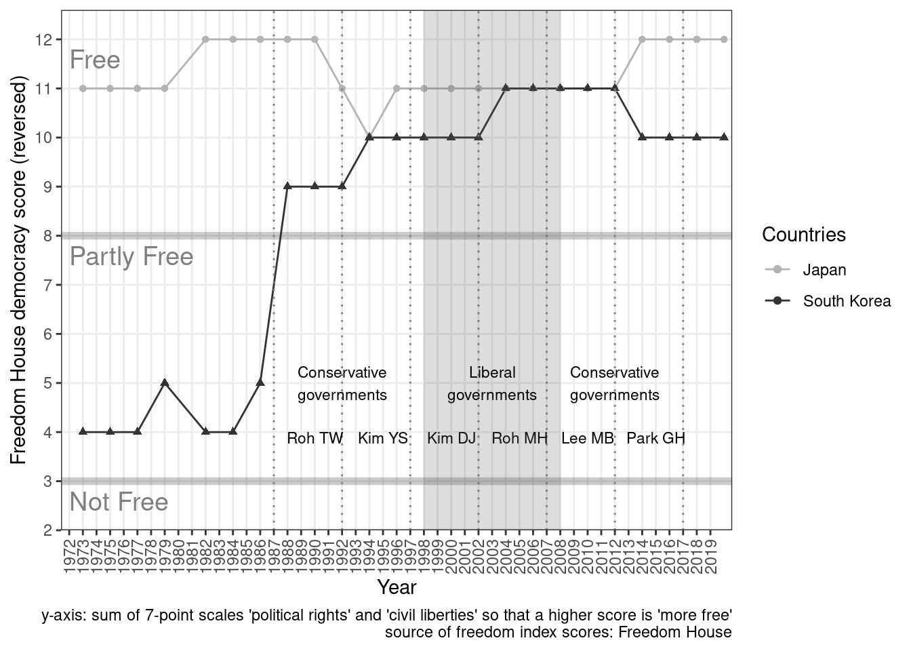

Load libraries
library(lubridate)
library(ggplot2)
library(dplyr)
library(tidytext)
library(quanteda)
library(scales)
library(LSX)
library(stringr)
library(readxl)Load and clean 2 data sources
data <- read_xlsx("data/party history.xlsx", sheet = "OVERVIEW")
data_cleaned <- data %>%
mutate(registered = ymd(registered),
terminated = ymd(terminated)) %>%
select(party_name, registered, terminated, reason, outcome) ## Warning: 5 failed to parse.## Warning: 17 failed to parse.data_cleaned %>% top_n(10)## Selecting by outcomedata_cleaned %>%
filter(grepl("등록취소|자진해산", reason)) %>%
count(reason)# data_cleaned <- data_cleaned %>%
# filter(!grepl("등록취소|자진해산", reason)) %>%
# mutate(newname = gsub(".*\\((.*)\\).*", "\\1", outcome)) %>%
# mutate(newname = gsub(".*→", "", newname)) %>%
# mutate(newname = coalesce(newname, reason)) %>%
# mutate(newname = gsub("과 신설합당|으로 신설합당|에 흡수합당|흡수합당|소멸", "", newname)) %>%
# select(!c(reason, outcome))
#Sys.setlocale(locale = "Korean")
data_cleaned %>%
filter(party_name %in% "신한국당")data_cleaned <- data_cleaned %>% # fix wrong dates
mutate(registered = case_when(
party_name == "신한국당" ~ ymd(19951206),
TRUE ~ ymd(registered)
))
data_cleaned#Sys.setlocale(locale = "C")
assembly_seats <- read_xlsx("data/party history.xlsx",
sheet = "ASSEMBLY_SEATS",
col_names = c("party_name", "perc", "count")) %>%
tibble::rowid_to_column("ID") %>%
mutate(term_start = case_when(
ID < 9 ~ ymd("2012.05.30"),
ID < 19 & ID > 10 ~ ymd("2008.05.30"),
ID < 29 & ID > 20 ~ ymd("2004.05.30"),
ID < 38 & ID > 30 ~ ymd("2000.05.30"),
ID < 46 & ID > 39 ~ ymd("1996.05.30"),
ID < 56 & ID > 47 ~ ymd("1992.05.30"),
ID < 74 & ID > 57 ~ ymd("1988.05.30"),
ID < 87 & ID > 75 ~ ymd("1985.04.11")
)) %>%
mutate(term_end = case_when(
ID < 9 ~ ymd("2016.05.29"),
ID < 19 & ID > 10 ~ ymd("2012.05.29"),
ID < 29 & ID > 20 ~ ymd("2008.05.29"),
ID < 38 & ID > 30 ~ ymd("2004.05.29"),
ID < 46 & ID > 39 ~ ymd("2000.05.29"),
ID < 56 & ID > 47 ~ ymd("1996.05.29"),
ID < 74 & ID > 57 ~ ymd("1992.05.29"),
ID < 87 & ID > 75 ~ ymd("1988.05.29")
)) %>%
filter(!party_name %in% c("* 정당별 득표율 및 의석수는 선거 당시 기준임.",
"정당 / 단체", "무소속", "합계")) %>%
mutate(perc = as.numeric(perc)) %>%
filter(perc > 5.00) %>%
filter(term_start >= ymd("1985.04.11"))
# %>%
# mutate(party_name = str_replace_all(party_name, "제.*대 국회\\(", "")) %>%
# mutate(party_name = str_replace_all(party_name, "\\)", ""))
# mutate(start = party_name)
#
# %>%
# tidyr::separate(party_name, c("start", "end"), sep = "~") %>%
#Sys.setlocale(locale = "Korean")
assembly_seatsjoin
data_cleaned <- data_cleaned %>%
filter(terminated >= ymd("1985.04.11"))
joined_list <- data_cleaned %>%
full_join(assembly_seats)## Joining, by = "party_name"joined_listjoined_list <- joined_list %>%
mutate(over_5perc = case_when(
perc != is.na(perc) ~ TRUE,
TRUE ~ FALSE
))
#Sys.setlocale(locale = "Korean")
joined_listFill in missing data manually and filter invalid ones (names that overlap)
joined_list <- joined_list %>%
left_join(data_cleaned) %>%
mutate(registered = case_when(
party_name == "새누리당" ~ ymd(20120213),
party_name == "한나라당" ~ ymd(19971121),
party_name == "친박연대" ~ ymd(20080321),
party_name == "창조한국당" ~ ymd(20071107),
party_name == "새천년민주당" ~ ymd(20000120),
party_name == "국민통합21" ~ ymd(20021111),
party_name == "민주국민당" ~ ymd(20000308),
party_name == "희망의한국신당" ~ ymd(20000215),
party_name == "민주자유당" ~ ymd(19900122),
party_name == "민중당" ~ ymd(19901110),
party_name == "한겨레민주당" ~ ymd(19880406),
party_name == "신한민주당" ~ ymd(19850118),
party_name == "민주한국당" ~ ymd(19810101),
party_name == "민중의당" ~ ymd(19880311),
party_name == "민주통합당" ~ ymd(20111216),
TRUE ~ ymd(registered)
)) %>%
mutate(terminated = case_when(
party_name == "새누리당" ~ ymd(20170213),
party_name == "한나라당" ~ ymd(20120213),
party_name == "친박연대" ~ ymd(20100222),
party_name == "창조한국당" ~ ymd(20120412),
party_name == "새천년민주당" ~ ymd(20070627),
party_name == "국민통합21" ~ ymd(20040913),
party_name == "민주국민당" ~ ymd(20040418),
party_name == "희망의한국신당" ~ ymd(20010121),
party_name == "민주자유당" ~ ymd(19951206),
party_name == "민중당" ~ ymd(19920301),
party_name == "한겨레민주당" ~ ymd(19910313),
party_name == "신한민주당" ~ ymd(19850118),
party_name == "민주한국당" ~ ymd(19880426),
party_name == "민중의당" ~ ymd(19880429),
TRUE ~ ymd(terminated)
)) %>% # fix wrong dates
mutate(terminated = case_when(
party_name == "민주당" & registered == "2000-01-20" ~ ymd(20140336),
TRUE ~ ymd(terminated)
))## Joining, by = c("party_name", "registered", "terminated", "reason", "outcome")## Warning: All formats failed to parse. No formats found.# joined_list <- joined_list %>%
# # mutate(valid_name = case_when(
# # terminated >= term_start & terminated <= term_end ~ TRUE
# # )) %>%
# # filter(over_5perc == TRUE)
# filter(registered <= term_start)
#Sys.setlocale(locale = "Korean")
joined_list %>%
filter(party_name %in% "민주당")Code the party positions
joined_list <- joined_list %>%
group_by() %>%
mutate(party_name = factor(party_name)) %>%
mutate(pos = case_when(
party_name == "새누리당" ~ "conservative",
party_name == "민주통합당" ~ "liberal",
party_name == "통합진보당" ~ "progressive",
party_name == "한나라당" ~ "conservative",
party_name == "통합민주당" ~ "liberal",
party_name == "자유선진당" ~ "conservative",
party_name == "친박연대" ~ "conservative",
party_name == "민주노동당" ~ "progressive",
party_name == "열린우리당" ~ "liberal",
party_name == "한나라당" ~ "conservative",
party_name == "민주노동당" ~ "progressive",
party_name == "새천년민주당" ~ "liberal",
party_name == "자유민주연합" ~ "conservative",
party_name == "한나라당" ~ "conservative",
party_name == "새정치국민회의" ~ "liberal",
party_name == "자유민주연합" ~ "liberal",
party_name == "민주국민당" ~ "liberal",
party_name == "신한국당" ~ "conservative",
party_name == "새정치국민회의" ~ "conservative",
party_name == "통합민주당" ~ "liberal",
party_name == "자유민주연합" ~ "conservative",
party_name == "민주자유당" ~ "conservative",
party_name == "민주당" ~ "liberal",
party_name == "통일국민당" ~ "conservative",
party_name == "신정당" ~ "conservative",
party_name == "민중당" ~ "progressive",
party_name == "민주정의당" ~ "conservative",
party_name == "평화민주당" ~ "liberal",
party_name == "통일민주당" ~ "conservative",
party_name == "신민주공화당" ~ "conservative",
party_name == "한겨레민주당" ~ "liberal",
party_name == "한겨레민주당" ~ "liberal"
)) %>%
filter(!grepl("등록취소", reason, fixed = TRUE))Plot party history
x <- joined_list %>%
mutate(registered = as.Date(registered, format = "ymd")) %>%
mutate(pos = recode(pos, progressive = "prog")) %>%
mutate(party_name = case_when(
party_name == "새누리당" ~ "새누리당\nSaenuri Party",
party_name == "자유선진당" ~ "자유선진당\nLiberty Forward Party",
party_name == "친박연대" ~ "친박연대\nChinbak Yeondae",
party_name == "새천년민주당" ~ "새천년민주당\nNew Millennium Dem. Party",
party_name == "한나라당" ~ "한나라당\nHannara Party",
party_name == "새정치국민회의" ~ "새정치국민회의\nNat'l Council for New Pol.",
party_name == "자유민주연합" ~ "자유민주연합\nUnited Liberal Democrats",
party_name == "통일국민당" ~ "통일국민당\nUnification National Party",
party_name == "신한국당" ~ "신한국당\nNew Korea Party",
party_name == "민주자유당" ~ "민주자유당\nDemocratic Liberal Party",
party_name == "신민주공화당" ~ "신민주공화당\nNew Dem. Republ. Party",
party_name == "통일민주당" ~ "통일민주당\nReunification Dem. Party",
party_name == "민주정의당" ~ "민주정의당\nDemocratic Justice Party",
party_name == "민주통합당" ~ "민주통합당\nDemocratic United Party",
party_name == "평화민주당" ~ "평화민주당\nPeace Democratic Party",
party_name == "통합민주당" ~ "통합민주당\nUnited Democratic Party",
party_name == "열린우리당" ~ "열린우리당\nYeollin Uri Party",
party_name == "민주국민당" ~ "민주국민당\nDemocratic National Party",
party_name == "민주당" ~ "민주당\nDemocratic Party",
party_name == "통합진보당" ~ "통합진보당\nUnified Progressive Party",
party_name == "민주노동당" ~ "민주노동당\nDemocratic Labor Party",
TRUE ~ as.character(party_name))) %>%
filter(!pos == is.na(pos)) %>%
# filter(perc >= 5) %>%
group_by(pos)
x <- x %>%
ggplot(aes(ymin = registered, ymax = terminated,
x = reorder(party_name, registered), color = pos)) +
geom_linerange(size = 7) +
scale_colour_manual(values = c("grey40", "grey70", "grey90")) +
coord_flip() +
theme_minimal() +
theme(legend.position = "top",
axis.text.x = element_text(angle = 90, hjust = 1)) +
# facet_grid(pos~ ., scales = "free_y", space = "free_y") +
# theme(panel.grid = element_blank()) +
xlab("") +
ylab("") +
labs(caption = "parties above 5% votes in legislature.
raw data source: National Election Commission, The National Assembly of the Republic of Korea",
color = "Party") +
scale_y_date(breaks = "1 year", labels = date_format("%Y"),
limits = as.Date(c("1986-05-30", "2017-05-29")), expand = c(0,0)) +
geom_hline(yintercept = as.Date("1990-01-22")) +
geom_hline(yintercept = as.Date(c("1987-12-16", "1992-12-18", "1997-12-18", "2002-12-19",
"2007-12-19", "2012-12-19")),
linetype = 5, color = "grey40") +
geom_hline(yintercept = as.Date(c("1992-3-25", "1996-4-12", "2000-4-13", "2004-4-15",
"2008-4-9", "2012-4-11", "2016-4-13")), linetype = 3) +
annotate(geom = "text", y = as.Date("1990-01-22"), x = "친박연대\nChinbak Yeondae",
label = "grand 3-party merger", vjust = "right", size = 4, angle = 90) +
annotate(geom = "text", y = as.Date("1987-12-16"), x = "친박연대\nChinbak Yeondae",
label = "presidential elections", vjust = "right", size = 4, angle = 90) +
annotate(geom = "text", y = as.Date("1996-4-12"), x = "친박연대\nChinbak Yeondae",
label = "legislative elections", vjust = "right", size = 4, angle = 90) +
annotate(geom = "curve", y = as.Date("1995-12-6"), yend = as.Date("1995-12-6"),
x = "민주자유당\nDemocratic Liberal Party",
xend = "신한국당\nNew Korea Party",
curvature = -0.6, arrow = arrow(length = unit(0.2, "cm"))) +
annotate(geom = "curve", y = as.Date("1997-11-21"), yend = as.Date("1997-11-21"),
x = "신한국당\nNew Korea Party",
xend = "한나라당\nHannara Party",
curvature = -0.6, arrow = arrow(length = unit(0.2, "cm"))) +
annotate(geom = "curve", y = as.Date("1995-9-5"), yend = as.Date("1995-9-5"),
x = "민주당\nDemocratic Party",
xend = "새정치국민회의\nNat'l Council for New Pol.",
curvature = -0.5, arrow = arrow(length = unit(0.2, "cm"))) +
annotate(geom = "curve", y = as.Date("2000-1-20"), yend = as.Date("2000-1-20"),
x = "새정치국민회의\nNat'l Council for New Pol.",
xend = "새천년민주당\nNew Millennium Dem. Party",
curvature = -0.2, arrow = arrow(length = unit(0.2, "cm"))) +
annotate(geom = "curve", y = as.Date("2006-4-7"), yend = as.Date("2006-4-7"),
x = "자유민주연합\nUnited Liberal Democrats",
xend = "한나라당\nHannara Party",
curvature = -0.2, arrow = arrow(length = unit(0.2, "cm"))) +
annotate(geom = "curve", y = as.Date("2011-11-23"), yend = as.Date("2011-11-23"),
x = "통합민주당\nUnited Democratic Party",
xend = "민주통합당\nDemocratic United Party",
curvature = -0.3, arrow = arrow(length = unit(0.2, "cm"))) +
annotate(geom = "curve", y = as.Date("2003-11-11"), yend = as.Date("2003-11-11"),
x = "한나라당\nHannara Party",
xend = "열린우리당\nYeollin Uri Party",
curvature = -0.2, arrow = arrow(length = unit(0.2, "cm"))) +
annotate(geom = "curve", y = as.Date("2003-11-11"), yend = as.Date("2003-11-11"),
x = "새천년민주당\nNew Millennium Dem. Party",
xend = "열린우리당\nYeollin Uri Party",
curvature = -0.2, arrow = arrow(length = unit(0.2, "cm"))) +
annotate(geom = "curve", y = as.Date("2007-08-20"), yend = as.Date("2007-08-20"),
x = "열린우리당\nYeollin Uri Party",
xend = "통합민주당\nUnited Democratic Party",
curvature = -0.2, arrow = arrow(length = unit(0.2, "cm"))) +
annotate(geom = "curve", y = as.Date("1997-11-24"), yend = as.Date("1997-11-24"),
x = "민주당\nDemocratic Party",
xend = "한나라당\nHannara Party",
curvature = -0.4, arrow = arrow(length = unit(0.2, "cm"))) +
annotate(geom = "curve", y = as.Date("2008-02-04"), yend = as.Date("2008-02-04"),
x = "한나라당\nHannara Party",
xend = "자유선진당\nLiberty Forward Party",
curvature = -0.3, arrow = arrow(length = unit(0.2, "cm"))) +
annotate(geom = "curve", y = as.Date("2012-11-16"), yend = as.Date("2012-11-16"),
x = "자유선진당\nLiberty Forward Party",
xend = "새누리당\nSaenuri Party",
curvature = -0.2, arrow = arrow(length = unit(0.2, "cm"))) +
annotate(geom = "curve", y = as.Date("2012-02-03"), yend = as.Date("2012-02-03"),
x = "한나라당\nHannara Party",
xend = "새누리당\nSaenuri Party",
curvature = -0.3, arrow = arrow(length = unit(0.2, "cm")))
x## Warning: Removed 3 rows containing missing values (geom_segment).
#ggsave("plots/2_parties.jpg", width=7, height=9, dpi = 300) # remotes::install_github("xmarquez/democracyData")
library(democracyData)
#
fh <- download_fh(verbose = FALSE) #freedom house
dem_scores <- fh %>%
filter(fh_country == c("South Korea", "Japan")) %>%
select(fh_country, year, pr, cl, status, fh_total, fh_total_reversed)
dem_scores %>%
ggplot() +
annotate(geom = "segment", y = 8, x = -Inf, yend = 8, xend = Inf,
vjust = "left", size = 2, alpha = .2) +
annotate(geom = "segment", y = 3, x = -Inf, yend = 3, xend = Inf,
vjust = "left", size = 2, alpha = .2) +
geom_line(aes(year, fh_total_reversed, shape = fh_country, color = fh_country)) +
geom_point(aes(year, fh_total_reversed, shape = fh_country, color = fh_country)) +
ylim(2, 12) +
theme_bw() +
labs(x = "Year", y = "Freedom House democracy score (reversed)", color = "Countries",
caption = "y-axis: sum of 7-point scales 'political rights' and 'civil liberties' so that a higher score is 'more free'\nsource of freedom index scores: Freedom House") +
geom_vline(xintercept = c(1987, 1992, 1997, 2002,
2007, 2012, 2017), linetype = 3, col = "grey50") +
annotate(geom = "text", y = 11.6, x = 1972, hjust = "left",
label = "Free", size = 5, color = "grey50") +
annotate(geom = "text", y = 7.6, x = 1972, hjust = "left",
label = "Partly Free", size = 5, color = "grey50") +
annotate(geom = "text", y = 2.6, x = 1972, hjust = "left",
label = "Not Free", size = 5, color = "grey50") +
annotate(geom = "text", y = 4, x = 1990,
label = "Roh TW", vjust = "right", size = 3) +
annotate(geom = "text", y = 4, x = 1995,
label = "Kim YS", vjust = "right", size = 3) +
annotate(geom = "text", y = 4, x = 2000,
label = "Kim DJ", vjust = "right", size = 3) +
annotate(geom = "text", y = 4, x = 2005,
label = "Roh MH", vjust = "right", size = 3) +
annotate(geom = "text", y = 4, x = 2010,
label = "Lee MB", vjust = "right", size = 3) +
annotate(geom = "text", y = 4, x = 2015,
label = "Park GH", vjust = "right", size = 3) +
annotate("rect", xmin = 1998, xmax = 2008,
ymin = -Inf, ymax = Inf, alpha = 0.2) +
scale_x_discrete(limits = 1972:2019) +
scale_y_discrete(limits = 2.0:12.0) +
theme(axis.text.x = element_text(angle = 90, vjust = 0.5, hjust=1)) +
annotate(geom = "text", x = 1992, y = 5,
label = "Conservative\ngovernments", hjust = "center", size = 3) +
annotate(geom = "text", x = 2003, y = 5,
label = "Liberal\ngovernments", hjust = "center", size = 3) +
annotate(geom = "text", x = 2012, y = 5,
label = "Conservative\ngovernments", hjust = "center", size = 3) +
scale_color_manual(values=c("grey70", "grey20")) +
guides(shape = FALSE)
# ggsave("plots/2_dem_fh.jpg", width=7, height=4, dpi = 300)